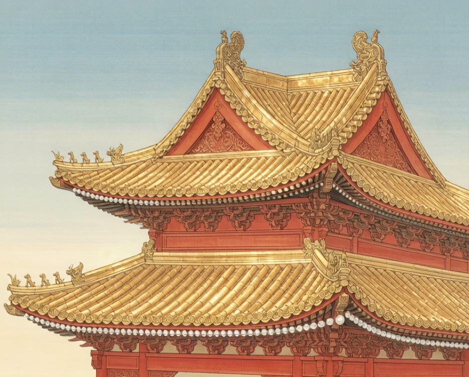

帘
太白诗帘
诗卷
互动
关于

经乱离后天恩流夜郎忆旧游书怀赠江夏韦太守良宰
TEXT CURTAIN · LI BAI'S LONGEST POEM · TANG DYNASTY
李白 撰
题解
诗仙李白最长之作，全诗一百六十六句、八百三十字。写经安史之乱、流放夜郎、承恩赦还，赠韦太守兼怀旧游。此帘以毛笔字为珠，悬于檐下；拂之即摆，拽之即走，松手回弹。
— 拂帘则动 · 按住可拽 · 滑动变阻器调波动 —